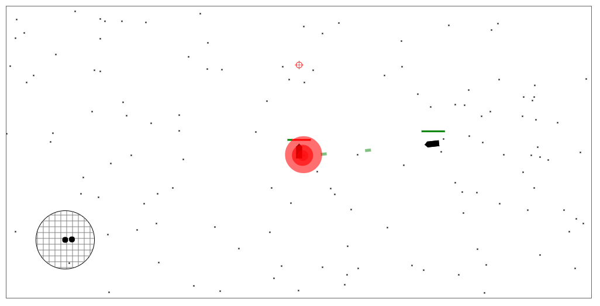
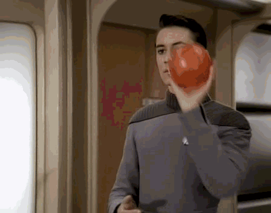
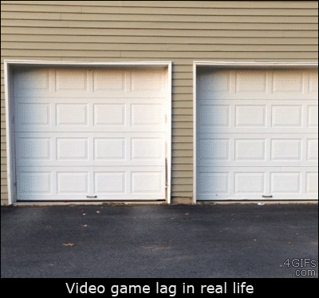

spacegame (work in progress)
@madbence
about the game
- multiplayer asteroids (without asteroids)
- originally a project @BME
- experimenting with various cutting-edge technologies
- open open source™ (github.com/level/community)
photorealistic visuals!
the stack

- koa
- websockets
 react
react- redux


 travis ci
travis ci
- etc...
export default props => (
<div>
<h2>Stateless components!</h2>
<h3>{props.subtitle}</h3>
</div>
);function square(x: number) {
return x * x;
}superior type inference & error messages!
why javascript?
- shared code (really!)
- ...
- ...
before redux: about reduce
[1, 2, 3].reduce(f, i) == f(f(f(i, 1), 2), 3) currentState == f(f(f(initialState, a1), a2), a3)
redux is about: (state, action) → state
- immutable → easy change detection + undo/redo
- deterministic → for replication
- no dependencies → for testing
- static typing → to avoid bugs early
- plain objects → easy serialization
- fast (faster: immutable.js & mori)
simulation
the interesting stuff
replicate state between clients ↔ server

relax!
- i needed availability ("lag" not allowed)
- i needed eventual consistency (it's fine to diverge)
- i needed partition tolarence (not really a problem)


how does it work?

how does it work?
deal with inconsistencies (optimistic handling)
- execution might fail on the server!
- rollback state to the last "verified" state
- rollback is easy, since state is immutable
todo
- scriptable controls (wip)
- fix bugs :-(
- improve visuals (webgl!)
- user management (right now it's databaseless)
- replay/save games
- offline-first mode (serviceworker)
- automatic deployment
- try out new technologies